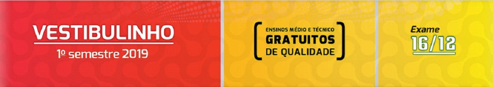
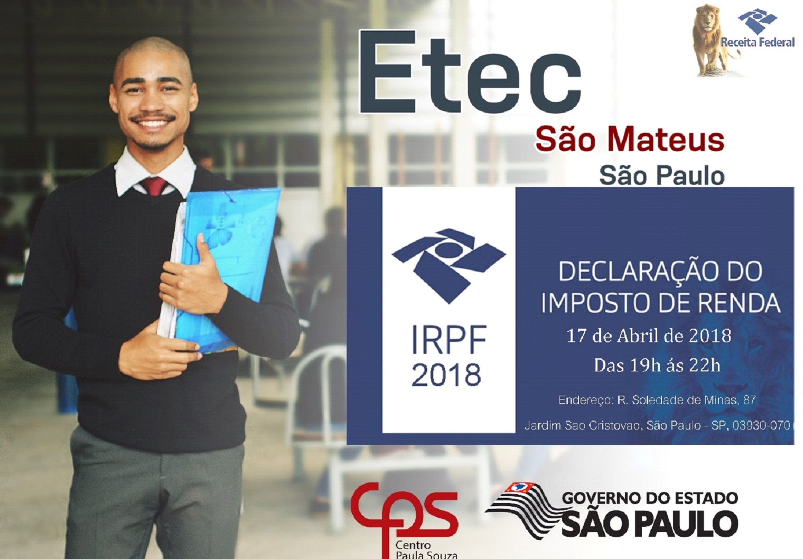

Sejam bem-vindos ao portal de notícias da instituição de ensino Etec São Mateus, o lugar perfeito para você ficar sabendo de todas as informações recentes que envolvam a escola.
Vestibulinho ETEC 2019 – Inscrições abertas!
admin 18 de outubro de 2018
As inscrições do Vestibulinho para o 1º semestre de 2019 já estão abertas! A prova é item obrigatório para ingresso nas ETECs. Para inscrever-se acesse o site www.vestibulinhoetec.com.br
Valor da taxa de inscrição: R$ 30,00 (trinta reais)
Para ingressar na Etec é necessário fazer o vestibular, por isso se inscreva e não perca essa chance.
VESTIBULANDO, ATENÇÃO PARA AS SEGUINTES INFORMAÇÕES DE SEU INTERESSE
admin 16 de julho de 2018
CENTRAL DO VESTIBULINHO: www.vestibulinhoetec.com.br
CENTRO PAULA SOUZA: www.centropaulasouza.sp.gov.br
16/07/2018 – Divulgação da lista de classificação geral
É DE INTEIRA RESPONSABILIDADE DO CANDIDATO OU DE SEU REPRESENTANTE LEGAL, A VERIFICAÇÃO DA LISTA DE CLASSIFICAÇÃO GERAL E CONVOCAÇÃO.
NÃO SERÃO FORNECIDAS INFORMAÇÕES A RESPEITO DA LISTA DE CLASSIFICAÇÃO GERAL E CONVOCAÇÃO POR TELEFONE, CARTA OU E-MAIL.
NÃO HAVERÁ, EM HIPÓTESE ALGUMA, REVISÃO NEM VISTAS DE PROVA.
OBS: a 2ª CHAMADA depende das vagas não preenchidas na 1ª chamada e assim sucessivamente.
O candidato que não realizar a matrícula no período fixado perderá o direito a vaga, ou seja, não será incluído nas chamadas seguintes.
Para o candidato menor de 16 (dezesseis) anos, no momento da matrícula, deverá estar assistido por seu representante legal *(pai, mãe, curador ou tutor), o qual assinará o requerimento de matrícula;
A matrícula obrigatoriamente somente será efetivada pelo responsável legal, no caso de curador ou tutor é obrigatória à apresentação da Guarda Judicial.
Instituições públicas são as criadas e mantidas pelo poder público federal, estadual, municipal ou pelo Distrito Federal. A gratuidade do ensino não indica, necessariamente, que a escola seja pública. Escolas vinculadas a fundações, cooperativas, Sistema S (SESI, SENAI, SESC, SENAC) etc., embora gratuitas, são consideradas particulares em função de sua dependência administrativa junto ao setor privado.
Prepare a documentação necessária antes da divulgação dos resultados. Não espere para solicitar os documentos de conclusão da sua escola, pois ela estará em período de férias e sua matrícula não será realizada e você perderá a sua vaga.
É de extrema importância ficar atento e ter conhecimento sobre como funciona o processo seletivo e a matrícula, por leia e memorize as informações abaixo, pois são vitais para vocês que visam fazer o vestibular e futuramente ser um aluno da Etec São Mateus.
admin 13 de julho de 2018
Processo especial de seleção de candidatos para preenchimento de vagas remanescentes para o 2º e 3º módulo dos Cursos Técnicos em Administração, Nutrição e Dietética e Segurança do Trabalho.
Inscrições de 16/07 à 27/07/2018, na ETEC São Mateus, de segunda a sexta no horário das 11h00 às 12h e das 13h às 18h.
Clique aqui e confira o EditalVocê que ainda deseja estudar em uma instituição como a Etec São Mateus, fique atento ao processo especial de seleção de candidatos para as vagas remanescentes.
admin 30 de maio de 2018
Clique aqui para conferir a publicação em Diário Oficial do dia 30/05/2018, referente ao resultado da aula teste e classificação final.Não perca mais tempo e confira o resultado da aula teste e classificação final.
admin 30 de março de 2018
No dia 17 de Abril de 2018, das 19h às 22h, a Etec São Mateus realizará declarações de Imposto de renda GRATUITAMENTE!
Compareça! Estamos localizados na Rua Soledade de Minas, 87 – Jardim São Cristovão, São Paulo, 03930-070. Esteja com todos os documentos necessários para realizar a sua declaração.
Acesse o site: idg.receita.fazenda.gov.br e confira as regras de declaração.
Declare o seu imposto de renda gratuitamente na Etec São Mateus, confira as informações necessárias e participe.
admin 1 de março de 2018
De segunda à sexta-feira
das 11h00 às 12h00
das 13h00 às 17h00
das 19h00 às 20h00.
Telefone: (11) 2721-5111 / 2721-5536
E-mail: etecsaomateus@hotmail.com
Não fique perdido e não perca seu tempo, confira os novos horários de atendimento ao público da secretária acadêmica da Etec São Mateus.
admin 21 de fevereiro de 2018
PEDIDOS DE APROVEITAMENTO DE ESTUDOS NA SECRETARIA DA ESCOLA
PERÍODO: DE 20/02/2018 A 09/03/2018
RESULTADOS APROVEITAMENTO DE ESTUDOS: 15/03/2018
– Requerimento (Fornecido pela Escola);
– Documentos Comprobatórios dos Estudos Concluídos com êxito (Diploma – Histórico Escolar – Certificado);
– Documentos Comprobatórios dos Estudos Concluídos com êxito (Diploma – Histórico Escolar – Certificado);
– Anexar os Conteúdos Programáticos dos componentes curriculares que solicitar Aproveitamento de Estudos;
* A comissão marcará data para avaliação de competências.
* O aluno deverá frequentar as aulas normalmente até ser chamado para dar ciência no processo (deferimento ou indeferimento).
Você que deseja usufruir do aproveitamento de estudos, fique atento as informações fornecidas.
Admin 15 de dezembro de 2017
A partir do dia 18/12/2017, a Secretaria Acadêmica irá atender de Segunda a Sexta-feira das 09h00 às 12h00 e das 13h00 às 18h00.
Não perca tempo e saiba dos horários de atendimento durante as férias escolares na Etec São Mateus.
admin 4 de dezembro de 2017
O prazo de rematrícula é do dia 11/12 à 15/12. Os alunos que já estão cursando deverão solicitar sua rematrícula pelo sistema NSA ALUNO, através de seu RM e sua senha.
No seguinte site: nsa.cps.sp.gov.br
Aos interessados em retomar seus estudos, deverão comparecer na secretaria da Etec São Mateus para requerer.
Para os alunos menores de 16 anos, os responsáveis deverão comparecer à Secretaria Acadêmica para realizar a rematrícula.
Saiba mais sobre como realizar sua rematrícula na Etec São Mateus.